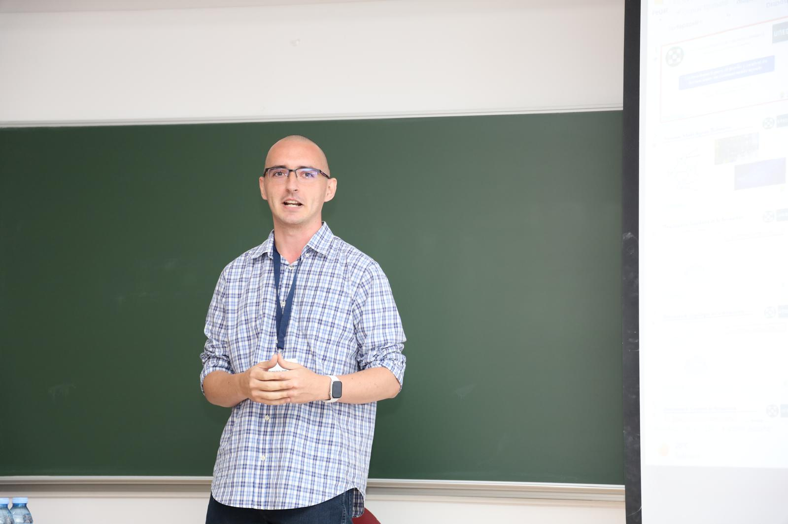

ETSI Informática — UNED
Francisco José Mañas Álvarez
Departamento de Informática y Automática · Docencia e investigación en robótica y ROS 2
Diseño e imparto formación en robótica con ROS 2, desde la iniciación hasta contenidos avanzados, combinando fundamentos sólidos con práctica real sobre robots simulados y físicos.

Formación Permanente
Programa de ROS 2 en tres cursos
Curso 2025/26
Introducción a la Robótica con ROS 2
Fundamentos de ROS 2, herramientas de desarrollo, modelado y simulación, e interfaces de supervisión.
Ver curso →
Curso 2026/27
ROS 2 — Nivel Intermedio
Arquitectura avanzada, árboles de comportamiento, localización, Nav2, percepción, seguridad SROS2 y QoS.
Ver curso →
Curso 2027/28
ROS 2 — Nivel Avanzado
Micro-ROS, MoveIt 2, gemelos digitales, IA e IoT aplicados a robótica. Próximamente.
Próximamente